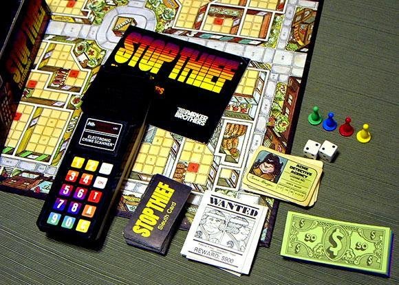

Stop Thief
The pocket computer that hides a thief and taunts you

Overview
Stop Thief was a crime-deduction board game published by Parker Brothers in 1979 and designed by Robert Doyle. Its centerpiece is the Electronic Crime Scanner, a handheld battery-powered computer that plays the part of the thief. The scanner hides the thief's position across a numbered city grid of buildings, streets, and subway stops, and moves that position according to its own rules — doubling back to confuse the players, breaking a window and then not going through it. It communicates its movements not with a screen but with sound: an alarm, two footsteps, a door creak, glass breaking, rapid footsteps, a subway rumble.
Each turn begins when a player presses the C (Clue) button and listens. Players must map the sounds to locations on the board, then move their detective pawn toward the deduced spot. To arrest, a player types a three-digit location code into the scanner and presses A (Arrest); the scanner responds with a sound verdict — a machine-gun burst followed by a two-tone siren for a successful collar, a machine-gun burst with a mocking 'na-na-na-na-na' when the thief has slipped away, and a raspberry for a false arrest that costs you your detective's license. If the thief commits three crimes uncaptured, it gets away and nobody wins.
Deep dive
The Electronic Crime Scanner is an opponent with private state: the thief's position is a secret the machine holds and mutates on its own. Players never see it — they must infer it from an audio channel. This is a genuinely adversarial interface, not a quiz box: the scanner actively tries to evade the players, and its sound effects are deliberately ambiguous evidence. It is one of the first consumer games with a true hidden-state electronic opponent, predating Milton Bradley's Dark Tower (1981).
The scanner's output is almost entirely non-verbal sound design. Different sound effects encode different thief behaviors — a door creak means the thief entered a building, breaking glass means a window, a rumble means the subway. The scanner also kept the last ten actions in an audio memory buffer, replayable by number keys. Players effectively perform an auditory version of a signal-triangulation task, which is why the game was described as easy to understand and hard to master.
The interface's most theatrical moment is the arrest attempt: you type a three-digit code and commit. The scanner judges your guess audibly and with consequences — false arrests cost money and, on the third one, your license. The game's tension comes from the fact that the machine knows the truth and will mock you when you are wrong. The thief's escape condition — three crimes and it vanishes, leaving no winner — means the computer can beat all the players at once.
Stop Thief was the third most-requested Christmas toy of 1979 according to Toy and Hobby magazine. A unit is held in the Victoria and Albert Museum's Palitoy Archive (accession B.1290:1 to 6-1999), and Restoration Games reissued the game in 2017 with a smartphone app replacing the scanner. The scanner itself remains an early example of an embodied, adversarial, audio-only computer interface.
Team & pioneers
- Robert Doyle. Designer of Stop Thief for Parker Brothers
- Parker Brothers. Publisher, 1979
- Palitoy. UK distributor; the V&A Palitoy Archive holds a unit (B.1290:1 to 6-1999)